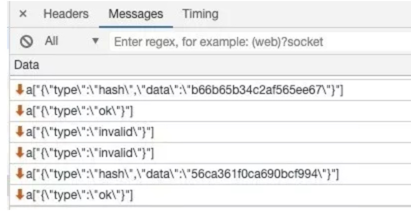
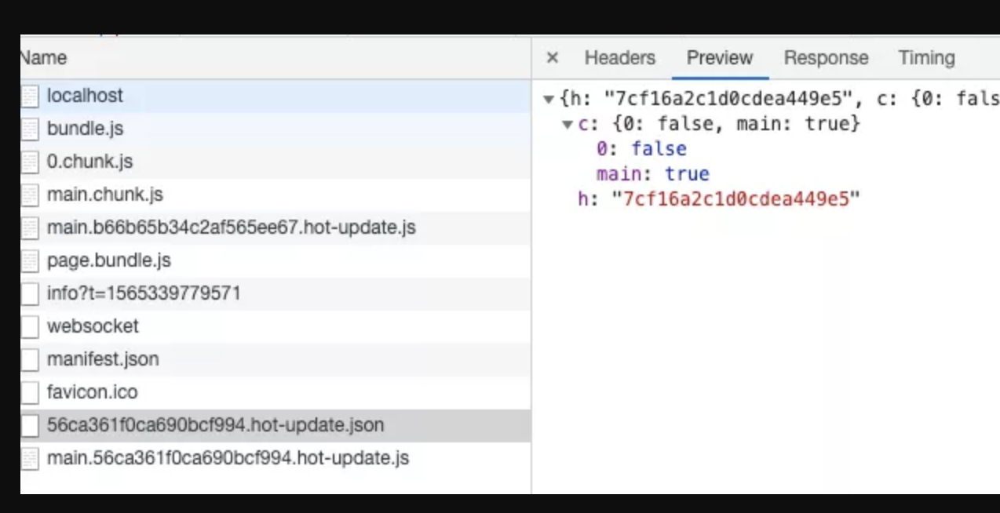
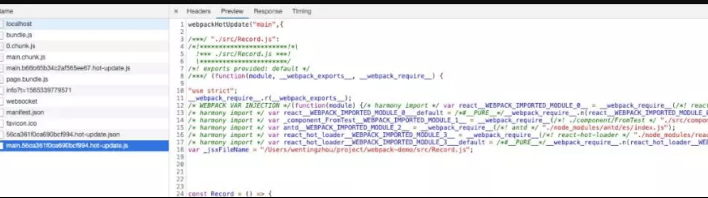

Hot Module Replacement（以下简称 HMR）是 webpack 发展至今引入的最令人兴奋的特性之一 ，当你对代码进行修改并保存后，webpack 将对代码重新打包，并将新的模块发送到浏览器端，浏览器通过新的模块替换老的模块，这样在不刷新浏览器的前提下就能够对应用进行更新。
基本实现原理大致这样的，构建
bundle的时候，加入一段HMR runtime的 js 和一段和服务沟通的 js 。文件修改会触发webpack重新构建，服务器通过向浏览器发送更新消息，浏览器通过jsonp拉取更新的模块文件，jsonp回调触发模块热替换逻辑
# 热更新配置
使用
webpack-dev-server,设置hot属性为true.写模块时，按照以下写法:
if (module.hot) { //判断是否有热加载
module.hot.accept('./hmrTest.js', function() { //热加载的模块路径
console.log('Accepting the updated printMe module!'); //热加载的回调，即发生了模块更新时，执行什么 callback
printMe();
})
}
- 缺点：更新逻辑得自己写。比如要使页面显示的内容生效，需要在回调中写入
document.append(xxx)
react的热加载，使用react-hot-loader
import { hot } from'react-hot-loader';
const Record = ()=>{
...
}
exportdefault hot(module)(Record);
或
if (module.hot) {
module.hot.accept('./App', function () {
var NextApp = require('./App')
ReactDOM.render(<NextApp />, rootEl)
})
}
# 实现过程
watch编译过程、devServer推送更新消息到浏览器- 浏览器接收到服务端消息做出响应
- 对模块进行热更新或刷新页面
# watch 编译过程、devServer 推送更新消息到浏览器
webpack-dev-server里引用了webpack-dev-middleware，相关的watch逻辑就是在里面实现的
//webpack-dev-server/lib/Server.js
setupDevMiddleware() {
this.middleware = webpackDevMiddleware(
this.compiler,
Object.assign({}, this.options, { logLevel: this.log.options.level })
);
}
// webpack-dev-middleware/index.js
if (!options.lazy) {
context.watching = compiler.watch(options.watchOptions, (err) => {
...
});
}
以上代码可以看出，
webpack-dev-middleware是通过调用webpack的api对文件系统watch的。watchOptions如果没有配置的话，会取默认值。值的含义见：https://webpack.js.org/configuration/watch/
- 当文件发生变化时，重新编译输出
bundle.js。devServer下，是没有文件会输出到output.path目录下的，这时webpack是把文件输出到了内存中。webpack中使用的操作内存的库是memory-fs，它是NodeJS原生fs模块内存版(in-memory)的完整功能实现，会将你请求的url映射到对应的内存区域当中，因此读写都比较快
// webpack-dev-middleware/lib/fs.js
fileSystem = fs;
} elseif (isMemoryFs) {
fileSystem = compiler.outputFileSystem;
} else {
fileSystem = new MemoryFileSystem();
compiler.outputFileSystem = fileSystem;
}
devServer通知浏览器端文件发生改变，在启动devServer的时候，sockjs在服务端和浏览器端建立了一个webSocket长连接，以便将webpack编译和打包的各个阶段状态告知浏览器，最关键的步骤还是webpack-dev-server调用webpack api监听compile的done事件，当compile完成后，webpack-dev-server通过_sendStatus方法将编译打包后的新模块hash值发送到浏览器端
// webpack-dev-server/lib/Server.js
const addHooks = (compiler) => {
...
done.tap('webpack-dev-server', (stats) => {
this._sendStats(this.sockets, this.getStats(stats));
this._stats = stats;
});
};
...
_sendStats(sockets, stats, force) {
...
this.sockWrite(sockets, 'hash', stats.hash);
if (stats.errors.length > 0) {
this.sockWrite(sockets, 'errors', stats.errors);
} elseif (stats.warnings.length > 0) {
this.sockWrite(sockets, 'warnings', stats.warnings);
} else {
this.sockWrite(sockets, 'ok');
}
}
# 浏览器接收到服务端消息做出响应
- 这里的主要逻辑位于
webpack-dev-server/client-src中，webpack-dev-server修改了webpack配置中的entry属性，在里面添加了webpack-dev-client的代码，这样在最后的bundle.js文件中就会有接收websocket消息的代码了
//webpack-dev-server/lib/utils/addEntries.js
let hotEntry;
if (options.hotOnly) {
hotEntry = require.resolve('webpack/hot/only-dev-server');
} elseif (options.hot) {
hotEntry = require.resolve('webpack/hot/dev-server');
}
...
if (hotEntry && checkInject(options.injectHot, config, true)) {
additionalEntries.push(hotEntry);
}
config.entry = prependEntry(config.entry || './src', additionalEntries);
- 以上代码可以看出，如果选择了热加载，输出的
bundle.js会包含接收websocket消息的代码。而且 plugin 也会注入一个HotModuleReplacementPlugin，构建过程中热加载相关的逻辑都在这个插件中。这个插件主要处理两部分逻辑：
- 注入
HMR runtime逻辑 - 找到修改的模块，生成一个补丁
js文件和更新描述json文件
先看一张图，看看 websocket 中的消息长什么样子：

可以看到，接收的消息只有
type和hash两个内容。在client里面的逻辑，他们分别对应不同的处理逻辑：
// webpack-dev-server/client-src/default/index.js
hash(hash) {
status.currentHash = hash;
},
...
ok() {
sendMessage('Ok');
if (options.useWarningOverlay || options.useErrorOverlay) {
overlay.clear();
}
if (options.initial) {
return (options.initial = false);
} // eslint-disable-line no-return-assign
reloadApp(options, status);
}
- 可以看出，当接收到
type为hash消息后会将hash值暂存起来，当接收到type为ok的消息后对应用执行reload操作，而hash消息是在ok消息之前的。再看看reload里面的处理逻辑：
// webpack-dev-server/client-src/default/reloadApp.js
if (hot) {
...
const hotEmitter = require('webpack/hot/emitter');
hotEmitter.emit('webpackHotUpdate', currentHash);
if (typeof self !== 'undefined' && self.window) {
self.postMessage(`webpackHotUpdate${currentHash}`, '*');
}
}
- 可以看出，如果配置了模块热更新，就调用
webpack/hot/emitter将最新hash值发送给webpack，然后将控制权交给webpack客户端代码。如果没有配置模块热更新，就进行liveReload的逻辑。webpack/hot/dev-server中会监听webpack-dev-server/client-src发送的webpackHotUpdate消息,然后调用webpack/lib/HotModuleReplacement.runtime中的check方法，检测是否有新的更新：
// webpack/hot/dev-server.js
var hotEmitter = require("./emitter");
hotEmitter.on("webpackHotUpdate", function(currentHash) {
lastHash = currentHash;
if (!upToDate() && module.hot.status() === "idle") {
log("info", "[HMR] Checking for updates on the server...");
check();
}
});
// webpack/lib/HotModuleReplacement.runtime
function hotCheck(apply) {
...
return hotDownloadManifest(hotRequestTimeout).then(function(update) {
...
hotEnsureUpdateChunk(chunkId);
...
return promise;
});
}
- 以上代码可以看出，在
check过程中，主要调用了两个方法hotDownloadManifest和hotDownloadUpdateChunk。hotDownloadManifest是通过Ajax向服务器请求十分有更新的文件，如果有就返回对应的文件信息，hotDownloadUpdateChunk是通过Jsonp的方式，请求最新的代码模块。如下图所示:
 
补充，这两个文件的名称是可以配置的，如果没有配置，则取定义在
WebpackOptionsDefaulter中的默认配置。
this.set("output.hotUpdateChunkFilename", "[id].[hash].hot-update.js");
this.set("output.hotUpdateMainFilename", "[hash].hot-update.json");
# 对模块进行热更新或刷新页面
综上，我们获得了更新的内容。接下来就可以进行更新了。这部分的逻辑在
webpack/lib/HotModuleReplacement.runtime中。
- 首先，更新过的模块，现在都属于
outdated 的模块，所以先找出过期的模块及其依赖:
//webpack/lib/HotModuleReplacement.runtime
function getAffectedStuff(updateModuleId) {
var outdatedModules = [updateModuleId];
var outdatedDependencies = {};
...
return {
type: "accepted",
moduleId: updateModuleId,
outdatedModules: outdatedModules,
outdatedDependencies: outdatedDependencies
};
}
- 根据调用的
Api信息，对结果进行标注及处理。
switch (result.type) {
case"self-declined":
...
break;
case"declined":
...
break;
case"unaccepted":
...
break;
case"accepted":
if (options.onAccepted) options.onAccepted(result);
doApply = true;
break;
case"disposed":
if (options.onDisposed) options.onDisposed(result);
doDispose = true;
break;
}
- 从缓存中删除过期的模块和依赖
// remove module from cache
delete installedModules[moduleId];
// when disposing there is no need to call dispose handler
delete outdatedDependencies[moduleId];
// remove "parents" references from all children
for (j = 0; j < module.children.length; j++) {
...
}
// remove outdated dependency from module children
var dependency;
var moduleOutdatedDependencies;
for (moduleId in outdatedDependencies) {
...
}
- 将新的模块添加到
modules中，当下次调用webpack_require(webpack重写的require方法)方法的时候，就是获取到了新的模块代码了。
// insert new code
for (moduleId in appliedUpdate) {
if (Object.prototype.hasOwnProperty.call(appliedUpdate, moduleId)) {
modules[moduleId] = appliedUpdate[moduleId];
}
}
最后就是错误的兼容了，如果热加载失败，将会刷新浏览器。